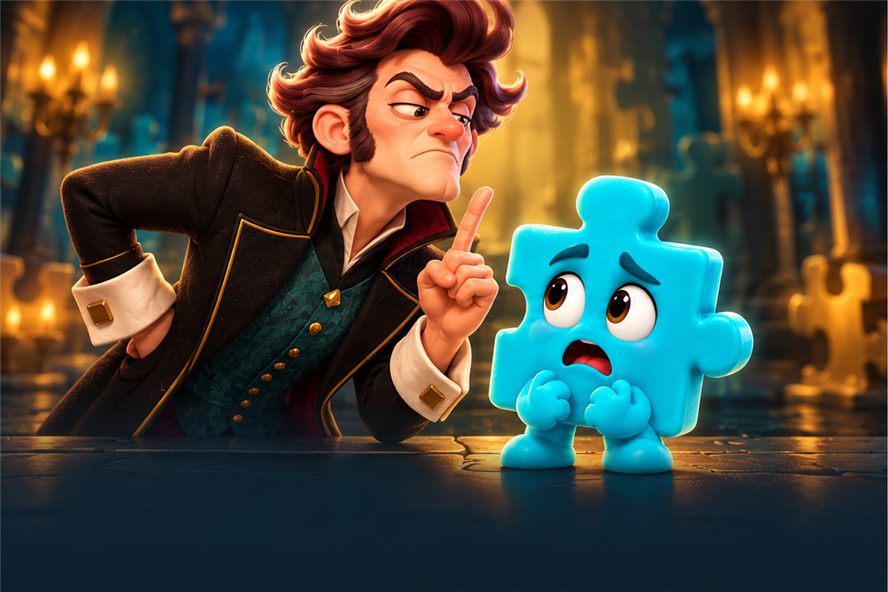
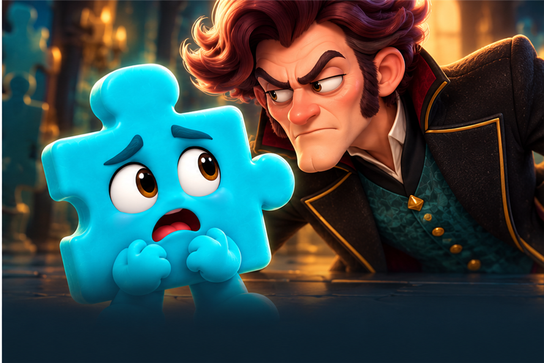

A · Baron uyarıyor
Baron orta planda uyarı parmağı kaldırıyor; Jiggle kartın odağı.
Her sahne 888×592; başlık, açıklama ve “Başla” düğmesi oyun arayüzünde kalır.

Baron orta planda uyarı parmağı kaldırıyor; Jiggle kartın odağı.

Öndeki Jiggle duyguyu taşır; Baron arkadan yaklaşır.